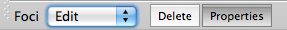
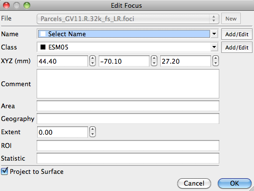

Foci editing
When Foci Mode is
activated, select Edit tools in the dropdown displayed at the bottom of
the Toolbar.

- By
default, the Properties button is activated. If
a displayed focus is clicked, the Edit Foci box will
pop up and a focus's Name, Class, or XYZ location can be
edited.
- When the Delete button is activated,
clicking on a focus will delete it from display and from its
foci file.
- When you are done editing/deleting foci,
remember to save your changes using Save/Manage Files.
